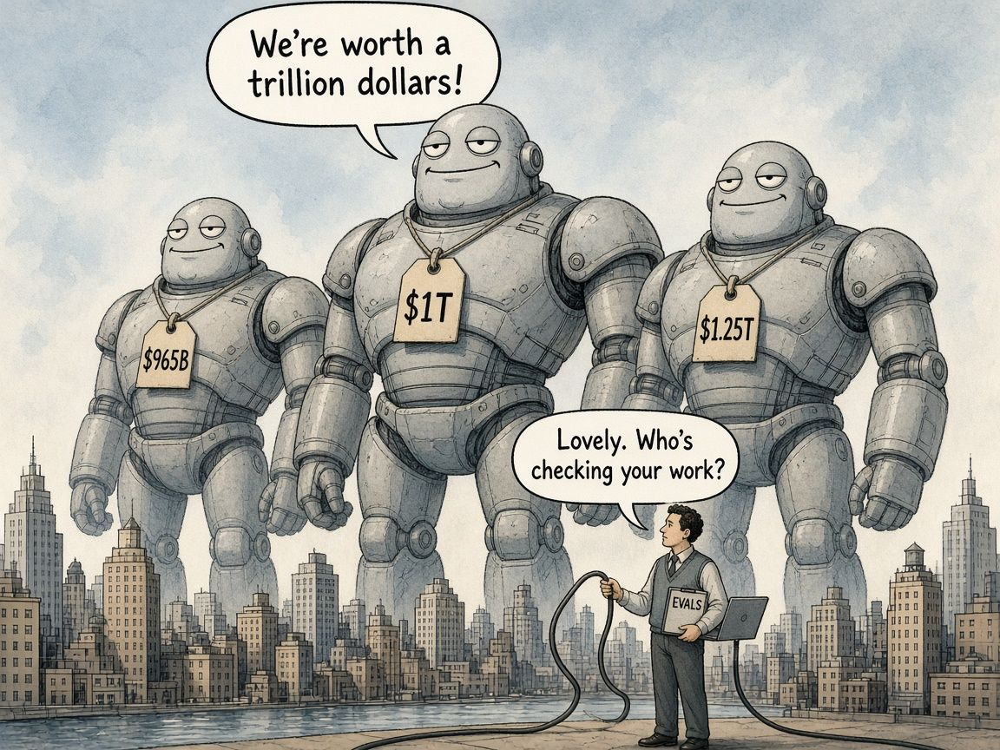

The Big Bet on AI: What It Means, and What It Means for a Professional
When people say a company has a huge capitalisation, it sounds like it’s already won. With an accounting background, I hear something quieter: someone has put a price on a claim to future cash flows. That price can be enormous, and it can move a long way before a single dollar of profit shows up.

What the numbers actually say
On 28 May 2026, Anthropic announced a Series H raise of $65 billion at a $965 billion post-money valuation. The lead investors included Altimeter Capital, Dragoneer, Greenoaks and Sequoia Capital. The company said its run-rate revenue had passed $47 billion earlier that month. Only three months before, on 12 February, it had raised $30 billion in Series G at a $380 billion valuation, with run-rate revenue of $14 billion. So in a short stretch of 2026, the private valuation more than doubled while run-rate revenue roughly tripled.
That money wasn’t just sitting in reserve. Anthropic said it would fund safety research, compute and product. It also disclosed huge infrastructure deals: up to five gigawatts of new capacity with Amazon, five gigawatts of TPU capacity with Google and Broadcom, and GPU capacity with SpaceX.
The wider market is spending on the same scale. OpenAI closed $122 billion at an $852 billion valuation on 31 March. Amazon, Microsoft, Alphabet and Meta have guided to combined 2026 capital spending of at least about $720 billion, mostly on AI infrastructure.
As of early November, Anthropic is preparing to list. Its amended S-1 filing reports $33.2 billion of revenue for the nine months to 30 September, and Reuters reported Q3 revenue of $16.8 billion, profitable on an adjusted basis. According to Bloomberg and Reuters, prospective IPO investors have been discussing valuations that have fallen from early talk near $2 trillion to roughly $1.2–1.3 trillion after a sharp AI selloff. That’s investor talk rather than a closed price, so it’s a signal of how the market is pricing the bet, not a number on the ledger.
An accountant’s translation
- Valuation is what someone will pay for the equity today, based on what they believe the business will earn later.
- Revenue or run-rate is what customers pay now, annualised. It isn’t profit.
- Cash burn and commitments are what the company spends, and has promised to spend, to keep growing. That includes multi-year compute deals that can dwarf a single year’s revenue.
When a company’s valuation sits many times above its current revenue, investors are betting that growth, pricing power and margins will catch up. Sometimes they’re right. Sometimes the valuation falls when growth slows, costs surprise or public markets won’t buy the private-market story. That isn’t cynicism. It’s just how capital markets work.
What it means for a professional
I’m a data scientist moving into AI engineering, and I spent years in finance before that, including at San Miguel Purefoods. Outside my day role I build things like my NBA side project, NoFlightZone, and I’m studying for the AWS Machine Learning Engineer exam. The big bet looks different when you’re the person shipping, checking and explaining the work rather than the person writing the cheque.
- Build skills that survive a vendor change. The model winning this quarter may not be the one your workplace uses next year. Designing evals, wiring tools into workflows and reasoning about cost and latency all carry over to the next model.
- Treat verification as part of the job. When money floods a field, the pressure is to ship fast and sound confident. Ask “how would I know if this were wrong?” every time.
- Don’t bet your career on one logo. Anthropic putting Claude on three major clouds is a good example to copy. Having options across clouds, models and employers is a way of managing risk.
- Read the cash story, not just the valuation story. Run-rate, losses, compute costs and long-term commitments show whether a business can fund its next few years. People who can read those numbers are useful wherever AI spending gets approved.
- Keep some craft that’s yours. A blog, a channel, a project or exam study gives you something you own when markets or org charts shift.
None of this means the bet is foolish. The revenue growth, the enterprise demand and the infrastructure spending are all real. It means the bet is large, and large bets bring both opportunity and volatility. Careers built on judgement, verification and transferable skills are better placed to ride that out than careers tied to one brand’s valuation.
So, is it still worth learning?
When I first read these numbers, my honest reaction was: if the market is betting a handful of AI giants will dominate almost everything, is it even worth learning this stuff? Is there anything left for the rest of us?
The more I sat with it, the more I read it the other way. These valuations aren’t a bet that the giants will do all the work. They’re a bet that a huge number of businesses will use AI. And someone still has to wire it into real systems, check that it’s right, explain the numbers and own the outcome. A few companies run most of the world’s cloud, and millions of people build careers on top of it. I think this will look similar.
What the bet does change is what is worth learning. Routine tasks the models already do well, like boilerplate code, first drafts and basic summaries, will be worth less. The skills around the model will be worth more: framing the problem, knowing your domain, designing evals, caring about data quality, judging cost and risk, and putting AI into a workflow safely. My accounting background feels more useful now, not less.
And a valuation is a forecast, not a fact. The IPO talk has already dropped from about $2 trillion to about $1.2 trillion in a matter of weeks. Even the market isn’t sure the giants will dominate everything, so I’m not planning my learning around that assumption either.
The giants might be big. They still need someone to plug them in and check their work.
Sources
- Anthropic Series H, 28 May 2026
- Anthropic Series G, 12 Feb 2026
- OpenAI $122B raise, 31 Mar 2026
- The Verge on Big Tech capex, 5 Nov 2026
- CNBC on Microsoft and Google capex, 29 Oct 2026
- Bloomberg on Anthropic IPO valuation, 6 Nov 2026
- Anthropic S-1/A filing